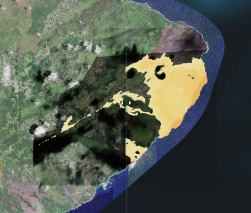

Caldera Collapse Increases the Size and Duration of Volcanic Eruptions
Scientists have figured out what triggers large-scale volcanic eruptions and what conditions likely lead to them.
Hawaii’s Kilauea is one of the most active volcanoes in the world. Because of this and its relative ease of accessibility, it is also among the most heavily outfitted with monitoring equipment – instruments that measure and record everything from earthquakes and ground movement to lava volume and advancement.
Kilauea’s 2018 eruption, however, was especially massive. In fact, it was the volcano’s largest eruption in over 200 years. Scientists at NASA’s Jet Propulsion Laboratory in Southern California used the abundance of data collected from this rare event to shed light on the cause of large-scale eruptions like this one and, perhaps more importantly, what mechanisms trigger them.
“Ultimately, what caused this eruption to be so much larger than normal was the collapse of the volcano’s caldera – the large, craterlike depression at the volcano’s summit,” said JPL’s Alberto Roman, lead author of the new study published recently in Nature. “During a caldera collapse, a massive block of rock near the top of the volcano slides down into the volcano. As it slides, gets stuck on the jagged walls around it, and slides some more, the block of rock squeezes out more magma than would ordinarily be expelled.”
But what the science team really wanted to know was what caused the caldera to collapse in the first place – and they found their answer.
The likely culprit? Vents – openings through which lava flows – located a distance away from, and at a much lower elevation than, the volcano’s summit.
“Sometimes, volcanoes erupt at the summit, but an eruption can also occur when lava breaks through vents much lower down the volcano,” said JPL’s Paul Lundgren, co-author of the study. “Eruption through these low-elevation vents likely led to the collapse of the caldera.”

Lundgren compares this type of vent to the spigot on a collapsible water jug you’d take on a camping trip. As the water level drops toward the location of the spigot, the flow of water slows or stops. Likewise, the lower down the volcano a vent (or “spigot”) is located, the longer lava is likely to flow before reaching a stopping point.
A large quantity of magma can be expelled quickly from the chamber (or chambers) beneath the volcano through these vents, leaving the rocky floor and walls of the caldera above the chamber without sufficient support. The rock from the caldera can then collapse into the magma chamber.
As the rock falls, it pressurizes the magma chambers – for Kilauea, the research team identified two of them – increasing the magma flow to the distant vents as well as the total volume of the eruption. The pressurization is akin to squeezing the water jug to force out the last little bit of water.
After developing their model of these eruption processes, taking advantage of the myriad data available from Kilauea, they also compared the model’s predictions to observations from similar eruptions driven by caldera collapse at other volcanoes. The results were consistent. Even though the model doesn’t predict when a volcano is going to erupt, it can provide crucial insight into the likely severity of an eruption once it begins.
“If we see an eruption at a low-elevation vent, that is a red flag or warning that caldera collapse is possible,” said Roman. “Similarly, if we detect earthquakes consistent with the slipping of the caldera rock block, we now know that the eruption will likely be much larger than usual.”
Jane J. Lee / Ian J. O’Neill
Jet Propulsion Laboratory, Pasadena, Calif.
818-354-0307 / 818-354-2649
Jane.j.lee@jpl.nasa.gov ian.j.oneill@jpl.nasa.gov
Written by Esprit Smith, NASA’s Earth Science News Team
2021-100
Last Updated: May 11, 2021
Editor: Tony Greicius
National Aeronautics